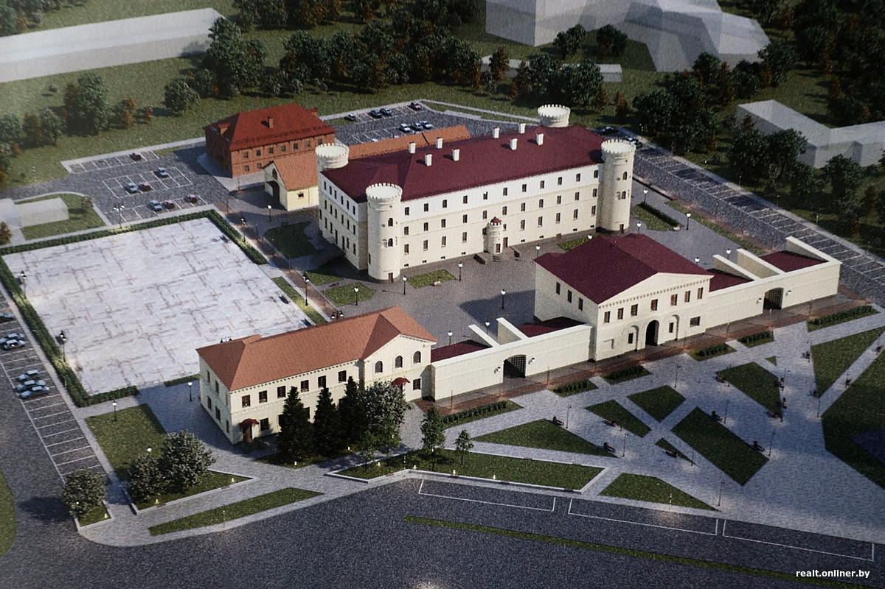

Пищаловский замок (также именовался «Минский тюремный замок») — историческое здание в центре Минска, построенное в 1825 году как каменный острог. Расположен на улице Володарского, 2, на вершине Романовского холма.
Строительство здания в стиле раннего классицизма было начато в 1822 году на горе в Романовском предместье по заказу помещика Рудольфа Пищалло, по фамилии которого местные жители новое сооружение окрестили Пищаловским замком. Вопреки распространённому заблуждению, Пищалло не был архитектором замка, а только генеральным подрядчиком, выигравшим конкурс и получившим казённые деньги на строительство нового каменного острога взамен обветшавшего старого. В роли архитектора выступил Казимир Хрщанович. Строительство было завершено в 1825 году и кроме собственно здания замка, были возведены и другие служебные постройки — административный корпус, аптека, больница и церковь.
В остроге отбывали наказание многие политические заключённые: повстанцы 1830—1831 и 1863—1864 годов, в том числе белорусский писатель и драматург Винцентом Дуниным-Марцинкевичем, поэты-возрожденцы Карусь Каганец и Алесь Гарун, Якуб Колас, был казнён революционер Иван Пулихов, покушавшийся на генерал-губернатора Курлова.
Архитектура замка сочетает элементы неоготики и классицизма (стиль неоклассицизма). Заказчиком строительства выступил помещик Рудольф Пищалло, в честь которого замок получил своё название. Автор проекта — архитектор Казимир Хрщанович.
Во время Великой Отечественной войны, когда город был захвачен немцами, в Пищаловском замке содержались арестованные партизаны и подпольщики. Некоторые были в нём казнены, либо замучены. В результате боёв за город в ходе войны, которые уничтожили исторический центр города, Пищаловский замок почти не пострадал, оставшись одним из немногих уцелевших в Минске зданий.
После передачи Пищаловского замка в ведение Минского горисполкома была начата масштабная реконструкция комплекса. Одно время рассматривался проект размещения в Пищаловском замке Национального исторического музея, но от этой идеи отказались. Было решено превратить территорию замка в многофункциональный комплекс с обширным открытым пространством. Согласно проекту, в зданиях Пищаловского замка будут размещены заведения общественного питания, а также административные помещения; открытое пространство внутри будет использоваться для культурно-досуговых мероприятий. Пять построек, представляющих историко-культурную ценность, включая здание собственно замка, буду реконструированы с сохранением архитектурного облика; остальные будут демонтированы. В январе 2025 года начался снос зданий, не представляющих исторической ценности.